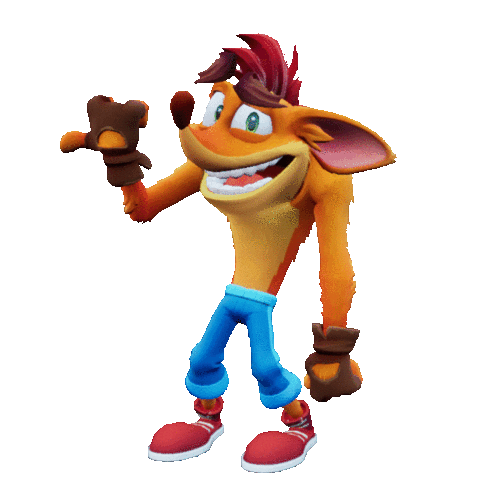

CRASH BANDICOOT
Crash Bandicoot é um popular jogo de plataforma desenvolvido pela Naughty Dog, lançado em 1996. Os jogadores controlam Crash, um bandicoot que luta contra o vilão Dr. Neo Cortex e seus capangas, atravessando níveis desafiadores, coletando itens e derrotando inimigos em uma aventura divertida.
